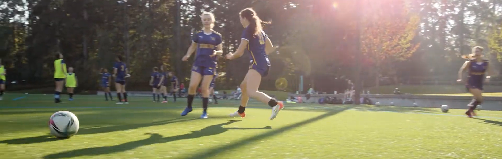

Soccer

Soccer at Eastside Preparatory School is a vibrant and highly competitive program
that emphasizes both skill development and teamwork. Students have the opportunity
to participate in a structured environment that fosters athletic growth, discipline,
and sportsmanship. The school fields both boys’ and girls’ teams that compete in
regional leagues and tournaments, offering players a chance to test their abilities
against other top-tier programs. Coaches focus not only on technical skills such as
passing, shooting, and strategy but also on cultivating leadership and collaboration
on and off the field. Beyond the competitive aspect, soccer at Eastside Prep encourages
a strong sense of community, bringing together students, families, and faculty to
support the teams, celebrate achievements, and promote a healthy, active lifestyle.
The program’s combination of rigorous training, spirited competition, and school
pride makes soccer a defining part of the athletic experience at Eastside Preparatory School.
What are some things you can do to help support soccer at EPS?
- Show up to soccer games!
- Raise awareness by posting stories at games or reposting existing stories
- Join EPS soccer and be a part of the community
- Participate in EPS fundraisers to help fund athletics